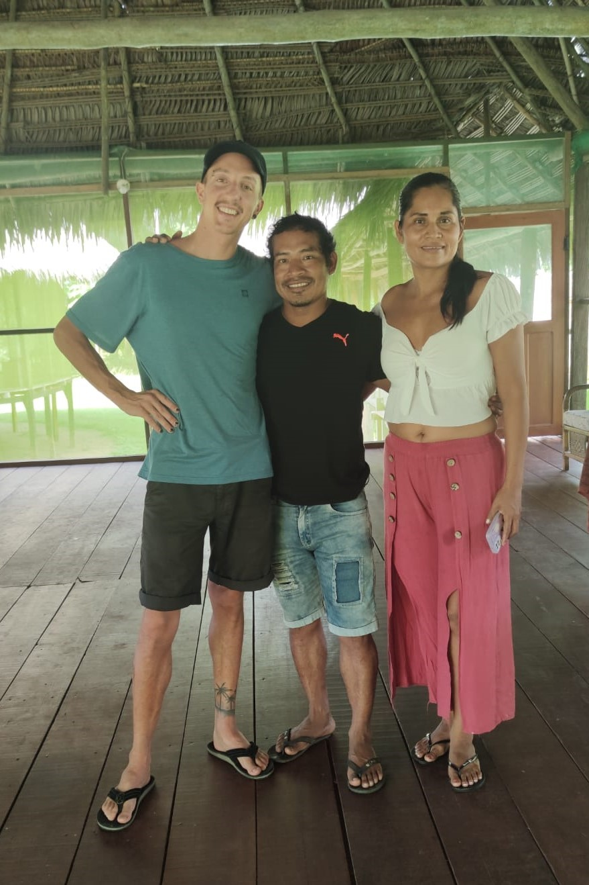
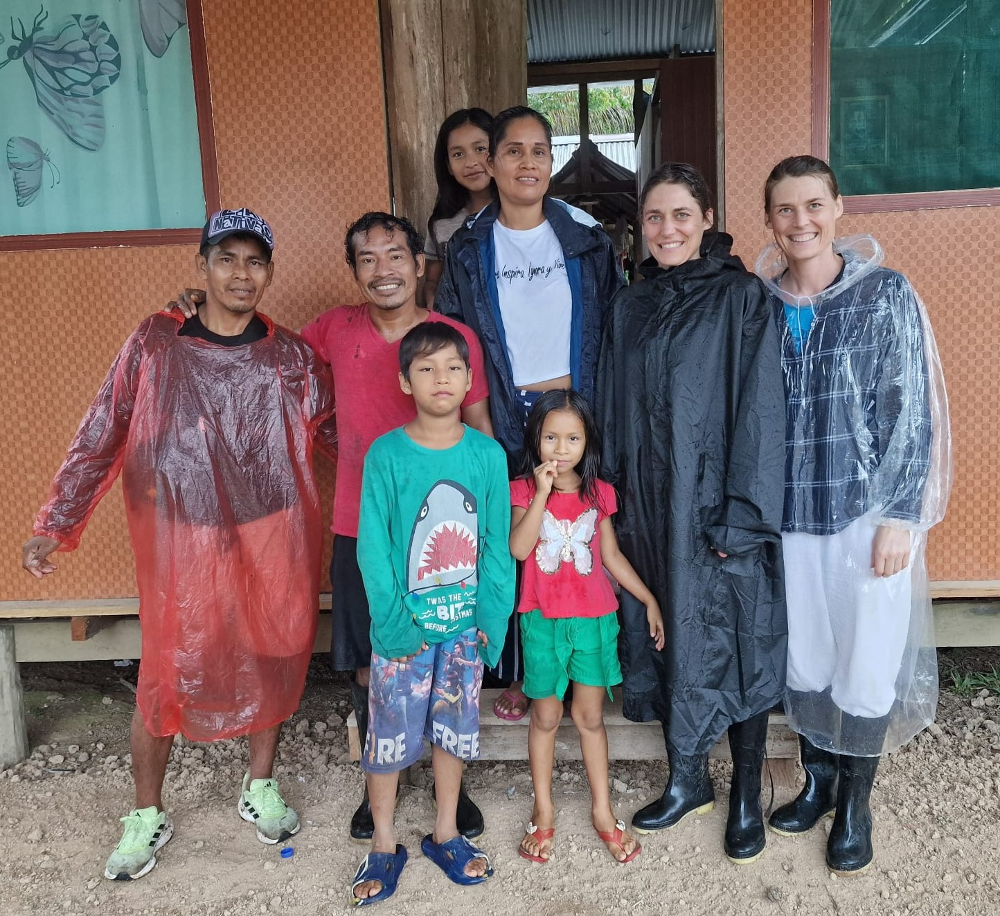

"I returned to Lima a few days ago from the selva near Iquitos. I met Elvis there. What a wonderful person and place—my whole heart still opens when I think of my time in the jungle."
- Anna S.
May 2023
Rainforest exploration with or without Ayahuasca
Elvis grew up in Pucallpa, raised by his grandfather after his father died in the civil war and his mother?.. . His grandfather—an experienced shaman—began training him at age 16. Since his 18th birthday, he has traveled extensively along the Amazon, gathering valuable jungle experience. For over 25 years, he has practiced Ayahuasca medicine and led rituals for locals and visitors—occasionally traveling abroad for this purpose. Since .., he has lived with his partner Mathilde and their seven children in the community ... 100 km?? upriver from Iquitos, working to support the local community...
Experience unforgettable jungle tours that can be tailored to last as many days as you wish. Elvis’s partner Mathilde provides traditional meals and authentic catering on-site. Tours of 6 or 7 days are particularly popular for fully immersing yourself in the diverse flora and fauna of the Amazon.
Depending on the length of the tour and included services, prices range from 90 to 110 USD per day.
Starting points: Pucallpa or Iquitos.
Important: Travel to and from the lodge is not included. Elvis works with local providers to arrange affordable transportation: from Iquitos, a shared taxi to Nauta takes about two hours (approx. 4 USD), then a boat ride of around three hours into the jungle (approx. 50 USD), most of which covers fuel costs.
You can choose as many Ayahuasca ceremonies as you like. Each ceremony takes place in the evening after the brew has been prepared together over the course of a full day.
A preparatory diet of about three days—avoiding oil, sugar, salt, alcohol, caffeine, sex, and other substances—is recommended. The diet can start on-site (e.g. beginning on day two, with ceremonies on the 4th, 5th, and 6th evenings) or before arrival to space ceremonies with rest days in between.
During daylight hours, there is time for jungle hikes, wildlife observation, learning about traditional plants, or relaxing in a hammock.
On a 6- or 7-day tour, you can comfortably integrate two to three ceremonies. Prices are 110 USD per ceremony per person.
Kambo is a traditional shamanic cleansing ritual using the secretion of a local rainforest frog (Phyllomedusa bicolor). The toxin is applied in tiny amounts to small, superficially scarified spots on the skin. It is regarded as a powerful purification on physical, energetic, and spiritual levels.
The effect is intense and sets in quickly. The aim is to release blockages and strengthen the immune system. The Kambo ritual is offered on-site upon request for USD 40.
Enjoy authentic overnight accommodations in the heart of the jungle—perfect for experiencing the nighttime magic of the Amazon. Each room has its own bathroom with a shower. Electricity is available for a few hours each day for charging devices and cooking. The accommodations are all built slightly elevated, as water levels can rise significantly in the rainy season. The buildings are rain- and mosquito-proof and accessible only by boat. If you like, you can swim right in front of the lodge—and with some patience, you may even spot dolphins at your doorstep. Traditional meals are served. Sometimes roasted macambo seeds are offered if you find the fruit on a jungle walk and bring them back. Vegetarian options are available upon request, and other special dietary needs can be accommodated within local possibilities.


*Accommodations vary depending on availability.
Ayahuasca is a traditional South American plant brew made from the vine Banisteriopsis caapi and the leaves of chacruna (Psychotria viridis). It has been used for centuries by indigenous shamans in communal ceremonies to enter altered states of consciousness, experience spiritual healing, and gain deep insights into the inner self.
The ceremony usually takes place at night, led by an experienced shaman. After a period of preparation and cleansing, the Ayahuasca brew is served in small sips. This is followed by a 4–6-hour journey accompanied by traditional icaros (healing songs), during which physical, emotional, and spiritual blockages may be released.
The Ayahuasca brew is cooked together. This takes a whole day. Preparation begins early in the morning, before sunrise, with gathering any additional ingredients if needed.
.jpeg)
.jpeg)
.jpeg)
.jpeg)
.jpeg)
.jpeg)
.jpeg)
.jpeg)
.jpeg)
.jpeg)
.jpeg)
.jpeg)
.jpeg)
.jpeg)
.jpg)
"I returned to Lima a few days ago from the selva near Iquitos. I met Elvis there. What a wonderful person and place—my whole heart still opens when I think of my time in the jungle."
- Anna S.
May 2023
"An unforgettable adventure in the heart of the Amazon!"
- Kalle W.
March 2023
"Elvis is not only an excellent shaman but also a wonderful host. His enthusiasm for exploring the jungle is immediately contagious. The moment guides the path. It is wonderful to be able to dive into this other world."
- Carolin D. and Cecilia D.
March 2025
"The tour gave us deep insights into jungle life and the Amazon's connection to nature."
- Annabell K.
September 2024
For availability inquiries and further information, contact Elvis in English or Spanish via WhatsApp: